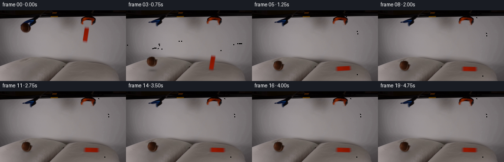
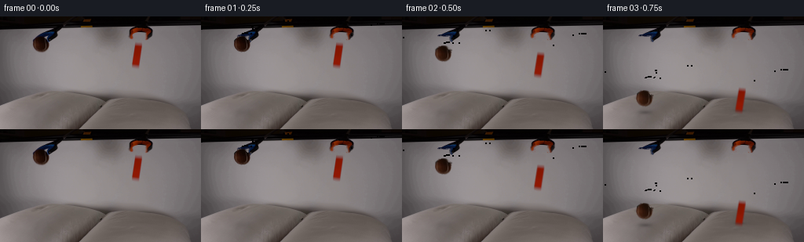
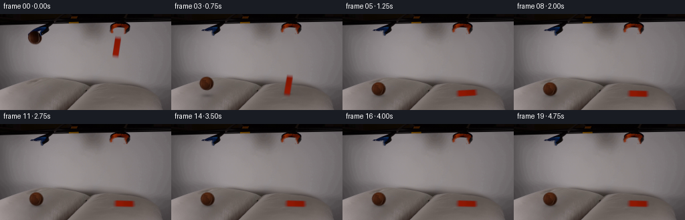
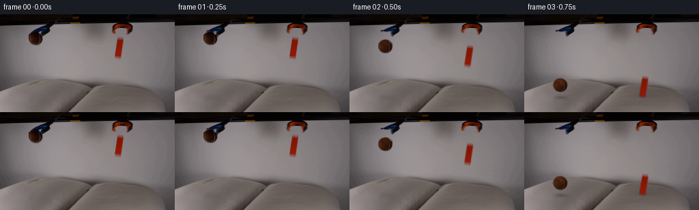
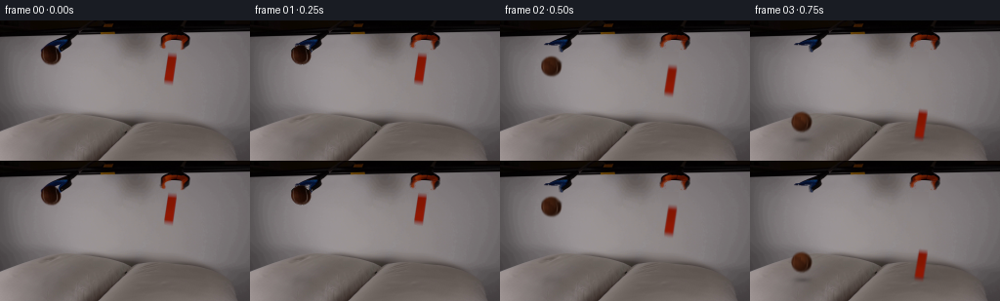

CODING AGENTS AS PIXEL WORLD MODELS
traex/GPT-6.1-Sol · 0003
点击播放 · 原生 RGB 像素
逐轮保存的候选
回放视频、检查图与代码变化。
每份候选均可单独播放。实际图片检查记录在下方工具轨迹中。
候选 01播放与检查图
点击播放 · 原生 RGB 像素


展开代码变化
--- 上一保存版本
+++ 本次保存版本
@@ -0,0 +1,221 @@
+from pathlib import Path
+import math
+import cv2
+import numpy as np
+from PIL import Image, ImageDraw
+from scipy.ndimage import distance_transform_edt, gaussian_filter, map_coordinates
+import artifact_io
+
+ROOT = Path(__file__).resolve().parent
+H, W = 144, 256
+SRC = np.array(Image.open(ROOT/'first_frame.png').convert('RGB'))
+Y, X = np.mgrid[:H, :W].astype(np.float32)
+
+
+def poly_mask(points):
+ ss=4
+ im=Image.new('L',(W*ss,H*ss))
+ ImageDraw.Draw(im).polygon([(round(x*ss),round(y*ss)) for x,y in points],fill=255)
+ return np.array(im.resize((W,H),Image.Resampling.LANCZOS)).astype(np.float32)/255
+
+# Remove the two held specimens; the original table remains the background.
+ball_remove = poly_mask([(47,24),(57,24),(60,27),(63,30),(64,34),(64,39),
+ (61,43),(57,46),(49,47),(44,44),(41,40),(40,34),(41,29),(44,26)])
+block_remove = np.zeros((H,W),np.float32)
+block_remove[32:68,166:183]=1
+remove = np.maximum(ball_remove,block_remove)
+mask = (remove>0.02).astype(np.uint8)*255
+clean = cv2.inpaint(SRC,mask,7,cv2.INPAINT_TELEA).astype(np.float32)
+# The soft background is better represented by a smooth local continuation.
+# Fit low-order surfaces to a ring of table pixels, independently for each object.
+for cx,cy,rx,ry in [(52,35,18,19),(174,50,17,25)]:
+ region=(abs(X-cx)<rx)&(abs(Y-cy)<ry)&(Y>20)
+ ring=region&(mask==0)&(SRC.mean(2)>90)
+ xx=(X[ring]-cx)/20; yy=(Y[ring]-cy)/20
+ design=np.stack([np.ones_like(xx),xx,yy,xx*xx,xx*yy,yy*yy],1)
+ weights=np.linalg.lstsq(design,SRC[ring].astype(np.float32),rcond=None)[0]
+ xx=(X-cx)/20; yy=(Y-cy)/20
+ surf=np.stack([np.ones_like(X),xx,yy,xx*xx,xx*yy,yy*yy],2)@weights
+ fill=region&(mask>0)
+ clean[fill]=surf[fill]
+
+# Preserve blue steel visible over the upper right of the sphere.
+f = SRC.astype(np.float32)
+blue=(f[:,:,2]>f[:,:,0]+9)&(f[:,:,2]>f[:,:,1]+6)&(X>=46)&(X<=70)&(Y>=19)&(Y<=33)
+blue_soft=cv2.GaussianBlur(blue.astype(np.float32),(3,3),.35)
+clean=clean*(1-blue_soft[:,:,None])+f*blue_soft[:,:,None]
+
+# Make the ball's soft matte from its colour against the recovered table.
+# In the few pixels hidden by the jaws, continue its felt and spherical shading.
+ball_shape=((X-52.0)/10.7)**2+((Y-34.4)/10.1)**2
+support=ball_shape<1.30
+brown=(f[:,:,0]>f[:,:,2]+10)&(f[:,:,0]>f[:,:,1]+8)&support
+core=brown&(ball_shape<.78)&(Y>26)
+_,inds=distance_transform_edt(~core,return_indices=True)
+nearest=f[inds[0],inds[1]]
+foreground=gaussian_filter(nearest,(.55,.55,0))
+# Recover the blurred edge without carrying the old grey table in the sprite.
+alpha=np.clip((clean[:,:,2]-f[:,:,2])/(clean[:,:,2]-foreground[:,:,2]+1e-5),0,1)
+alpha*=support.astype(np.float32)
+alpha=np.where(brown|((f.mean(2)<45)&support),alpha,0)
+# Arc occluded by tool is restored once released.
+missing=support&(ball_shape<.99)&((Y<27.1)|blue|((X>59)&(Y<33.3)))
+rad=np.sqrt(ball_shape)
+edge=np.clip((1.045-rad)/.16,0,1)
+alpha[missing]=edge[missing]
+alpha*=np.clip((1.14-rad)/.15,0,1)
+alpha=gaussian_filter(alpha,.27)
+ball_rgb=(f-clean*(1-alpha[:,:,None]))/np.maximum(alpha[:,:,None],.04)
+ball_rgb[missing]=foreground[missing]
+ball_rgb=np.clip(ball_rgb,0,180)
+# Limit edge decontamination to the physical felt's brown range.
+ball_rgb[:,:,0]=np.maximum(ball_rgb[:,:,0],ball_rgb[:,:,1]+8)
+ball_rgb[:,:,1]=np.maximum(ball_rgb[:,:,1],ball_rgb[:,:,2]+3)
+ball_premul=ball_rgb*alpha[:,:,None]
+
+# The orange block is edge-on, with a slightly diagonal long axis.
+ba=np.clip((clean[:,:,1]-f[:,:,1])/(clean[:,:,1]-23),0,1)
+ba*=((Y>=32)&(Y<=67)&(X>=166)&(X<=182)).astype(np.float32)
+ba[ba<.035]=0
+block_rgb=(f-clean*(1-ba[:,:,None]))/np.maximum(ba[:,:,None],.04)
+block_rgb=np.clip(block_rgb,0,255)
+block_rgb[:,:,1]=np.clip(block_rgb[:,:,1],13,40)
+block_rgb[:,:,2]=np.clip(block_rgb[:,:,2],0,18)
+block_premul=block_rgb*ba[:,:,None]
+
+# Opening the short tips retains the photographed shafts and their original finish.
+# Matting is restricted to the metal jaw ends, not the held specimens.
+left_tip=blue.astype(np.float32)*((Y>=24)&(X<60))
+right_tip=blue.astype(np.float32)*((Y>=24)&(X>=60))
+jaw_masks=[left_tip,right_tip]
+# The orange gripper's two short tips swing apart about their fixed upper pivots.
+for points in [[(165,21),(173,21),(173,27),(175,29),(170,30),(166,28),(164,25)],
+ [(185,21),(196,21),(197,24),(194,27),(190,30),(186,29),(186,26)]]:
+ shape=poly_mask(points)
+ obj=(f.mean(2)<90)|(f[:,:,0]-f[:,:,1]>23)
+ jaw_masks.append(shape*obj)
+
+jaw_background=clean.copy()
+all_jaws=np.maximum.reduce(jaw_masks)
+jaw_mask=(all_jaws>.05).astype(np.uint8)*255
+jaw_filled=cv2.inpaint(np.clip(clean,0,255).astype(np.uint8),jaw_mask,5,cv2.INPAINT_TELEA).astype(np.float32)
+# Smooth the inpainted pixels only, leaving the original arm textures untouched.
+clean=jaw_filled
+
+
+def warp_layer(rgb_premul,a,matrix):
+ c=cv2.warpAffine(rgb_premul,matrix,(W,H),flags=cv2.INTER_LINEAR,borderMode=cv2.BORDER_CONSTANT)
+ aa=cv2.warpAffine(a,matrix,(W,H),flags=cv2.INTER_LINEAR,borderMode=cv2.BORDER_CONSTANT)
+ return c,aa
+
+
+def composite(im,c,a):
+ return im*(1-a[:,:,None])+c
+
+
+def transform(cx,cy,angle,dx,dy,sx=1,sy=1):
+ # Positive angle rotates the upper end toward screen-right.
+ ang=math.radians(angle)
+ c,s=math.cos(ang),math.sin(ang)
+ a=np.array([[c*sx,-s*sy],[s*sx,c*sy]],np.float32)
+ p=np.array([cx,cy],np.float32)
+ return np.c_[a,p+np.array([dx,dy])-a@p].astype(np.float32)
+
+
+def shadow(im,cx,cy,rx,ry,strength):
+ a=strength*np.exp(-2*(((X-cx)/rx)**2+((Y-cy)/ry)**2))
+ return im*(1-a[:,:,None])
+
+
+def build_frames():
+ frames=[SRC.copy()]
+ release=.32
+ gravity=750.
+ sphere_floor=111.1
+ sphere_hit=math.sqrt(2*(sphere_floor-34.4)/gravity)
+ block_floor=118.4
+ block_hit=math.sqrt(2*(block_floor-60.9)/gravity)
+ for i in range(1,20):
+ t=i/4
+ elapsed=max(0,t-release)
+ opened=np.clip((t-.08)/.30,0,1)
+ opened=opened*opened*(3-2*opened)
+ im=clean.copy()
+ # Local elastic response of the fabric: fast indentation, damped recovery.
+ db=elapsed-sphere_hit
+ dc=elapsed-block_hit
+ bs=0 if db<0 else 1.15+2.9*math.exp(-db*8)*math.sin(min(db*11,math.pi/2))
+ cs=0 if dc<0 else .65+1.1*math.exp(-dc*7)
+ pillow_region=np.clip((Y-101)/8,0,1)
+ d=(bs*np.exp(-.5*((X-54)/17)**2-.5*((Y-122)/8)**2)
+ +cs*np.exp(-.5*((X-180)/21)**2-.5*((Y-119)/7)**2))*pillow_region
+ if d.max()>0:
+ remap_y=Y-d
+ im=cv2.remap(im,X,remap_y,cv2.INTER_LINEAR,borderMode=cv2.BORDER_REFLECT)
+ im*= (1-.025*d)[:,:,None]
+ # Gripper motion is limited to the jaws; shafts and frame stay fixed.
+ matrices=[transform(59,24,0,-1.8*opened,-.8*opened),
+ transform(64,23,0,1.6*opened,-.3*opened),
+ transform(170,21,18*opened,0,-.1*opened),
+ transform(190,21,-18*opened,0,-.1*opened)]
+ for a,m in zip(jaw_masks,matrices):
+ col,aa=warp_layer(jaw_background*a[:,:,None],a,m)
+ im=composite(im,col,aa)
+ # Free fall and a small energy-absorbing rebound on the pillow.
+ if db<0:
+ by=34.4+.5*gravity*elapsed**2
+ bx=52+.9*elapsed
+ else:
+ bx=52+.9*sphere_hit+1.5*(1-math.exp(-db*3))
+ # Small rebound lasts about a third second; then contact is permanent.
+ duration=.32
+ if db<duration:
+ by=sphere_floor-4*6.6*(db/duration)*(1-db/duration)
+ else:
+ by=sphere_floor+1.0+.85*math.exp(-(db-duration)*8)*math.cos((db-duration)*16)
+ ball_angle=0 if elapsed==0 else min(20,elapsed*18)
+ height=max(0,sphere_floor-by)
+ im=shadow(im,bx+1,122,11+height*.06,3.3+height*.025,.045+.24*math.exp(-height/24))
+ if dc<0:
+ cy=60.9+.5*gravity*elapsed**2
+ cx=172.7+.7*elapsed
+ angle=2.3*elapsed
+ else:
+ cx=172.7+.7*block_hit+.65*(1-math.exp(-dc*5))
+ cy=block_floor+.7*(1-math.exp(-dc*6))
+ u=np.clip(dc/.63,0,1)
+ # Begins as a near-vertical cuboid; tips over under its own weight.
+ angle=83*(u*u*(3-2*u))
+ if dc>.63:
+ angle=83+1.8*math.exp(-(dc-.63)*9)*math.sin((dc-.63)*17)
+ # Once horizontal, its side lies flush on the cushion.
+ sx=1.0
+ sy=1.0
+ m=transform(172.7,60.9,angle,cx-172.7,cy-60.9,sx,sy)
+ bcol,bmask=warp_layer(block_premul,ba,m)
+ resting=max(0,dc)
+ shx=cx+12*math.sin(math.radians(angle))
+ gap=max(0,block_floor-cy)
+ im=shadow(im,shx,cy+1.1,7+10*math.sin(math.radians(angle)),2.1+.03*gap,
+ .035+.20*math.exp(-gap/20))
+ # Release reduces the local shadow formerly cast by the ball's jaws.
+ freed=np.clip(elapsed/.27,0,1)
+ ball_colour=ball_premul+alpha[:,:,None]*np.array([13,9,5],np.float32)*freed
+ scale_y=1.0
+ scale_x=1.0
+ if 0<=db<.09:
+ squash=.05*math.sin(math.pi*db/.09)
+ scale_y=1-squash;scale_x=1+squash*.5
+ bm=transform(52,34.4,ball_angle,bx-52,by-34.4,scale_x,scale_y)
+ col,aa=warp_layer(ball_colour,alpha,bm)
+ im=composite(im,bcol,bmask)
+ im=composite(im,col,aa)
+ # Endpoints are completely stationary once the brief settling is over.
+ frames.append(np.clip(np.rint(im),0,255).astype(np.uint8))
+ return np.stack(frames)
+
+
+if __name__=='__main__':
+ out=build_frames()
+ assert np.array_equal(out[0],SRC)
+ artifact_io.save(out,ROOT)
候选 02播放与检查图
点击播放 · 原生 RGB 像素

展开代码变化
--- 上一保存版本 +++ 本次保存版本 @@ -74,7 +74,7 @@ ball_premul=ball_rgb*alpha[:,:,None] # The orange block is edge-on, with a slightly diagonal long axis. -ba=np.clip((clean[:,:,1]-f[:,:,1])/(clean[:,:,1]-23),0,1) +ba=np.clip((clean[:,:,1]-f[:,:,1])/np.maximum(clean[:,:,1]-23,1),0,1) ba*=((Y>=32)&(Y<=67)&(X>=166)&(X<=182)).astype(np.float32) ba[ba<.035]=0 block_rgb=(f-clean*(1-ba[:,:,None]))/np.maximum(ba[:,:,None],.04)
候选 03播放与检查图
候选 04播放与检查图
点击播放 · 原生 RGB 像素


展开代码变化
--- 上一保存版本
+++ 本次保存版本
@@ -72,6 +72,25 @@
ball_rgb[:,:,0]=np.maximum(ball_rgb[:,:,0],ball_rgb[:,:,1]+8)
ball_rgb[:,:,1]=np.maximum(ball_rgb[:,:,1],ball_rgb[:,:,2]+3)
ball_premul=ball_rgb*alpha[:,:,None]
+# A complete felt sphere is revealed as the clamp shadow clears. The texture
+# comes from the image; analytic normals remove the occluding jaw's dark patch.
+nx=(X-52.0)/10.5; ny=(Y-34.4)/10.1
+rr=nx*nx+ny*ny
+nz=np.sqrt(np.maximum(0,1-rr))
+light=np.clip(-.48*nx-.32*ny+.80*nz,0,1)
+illum=.43+.57*light
+felt=np.stack([88*illum,43*illum,21*illum],2)
+# Keep the fine photographed irregularities and tan seam rather than flat colour.
+valid=(rr<1.15)&brown&(Y>29)&(f[:,:,0]>24)
+low=gaussian_filter(f,(1.2,1.2,0))
+texture=np.clip(f-low,-10,10)
+felt += texture*np.array([.75,.60,.45],np.float32)
+seam=np.exp(-.5*((X-(58.1-.06*(Y-35)**2))/.55)**2)*np.exp(-.5*((Y-36)/5.4)**2)
+felt+=seam[:,:,None]*np.array([17,12,8],np.float32)
+released_alpha=np.clip((1.055-np.sqrt(rr))/.13,0,1)
+# Upper hemisphere was genuinely hidden in frame zero.
+released_rgb=np.where(valid[:,:,None],.40*ball_rgb+.60*felt,felt)
+released_premul=released_rgb*released_alpha[:,:,None]
# The orange block is edge-on, with a slightly diagonal long axis.
ba=np.clip((clean[:,:,1]-f[:,:,1])/np.maximum(clean[:,:,1]-23,1),0,1)
@@ -136,7 +155,7 @@
block_floor=118.4
block_hit=math.sqrt(2*(block_floor-60.9)/gravity)
for i in range(1,20):
- t=i/4
+ t=min(i/4,2.75)
elapsed=max(0,t-release)
opened=np.clip((t-.08)/.30,0,1)
opened=opened*opened*(3-2*opened)
@@ -200,14 +219,15 @@
.035+.20*math.exp(-gap/20))
# Release reduces the local shadow formerly cast by the ball's jaws.
freed=np.clip(elapsed/.27,0,1)
- ball_colour=ball_premul+alpha[:,:,None]*np.array([13,9,5],np.float32)*freed
+ ball_a=alpha*(1-freed)+released_alpha*freed
+ ball_colour=ball_premul*(1-freed)+released_premul*freed
scale_y=1.0
scale_x=1.0
if 0<=db<.09:
squash=.05*math.sin(math.pi*db/.09)
scale_y=1-squash;scale_x=1+squash*.5
bm=transform(52,34.4,ball_angle,bx-52,by-34.4,scale_x,scale_y)
- col,aa=warp_layer(ball_colour,alpha,bm)
+ col,aa=warp_layer(ball_colour,ball_a,bm)
im=composite(im,bcol,bmask)
im=composite(im,col,aa)
# Endpoints are completely stationary once the brief settling is over.
候选 05播放与检查图
点击播放 · 原生 RGB 像素

展开代码变化
--- 上一保存版本
+++ 本次保存版本
@@ -212,6 +212,15 @@
sy=1.0
m=transform(172.7,60.9,angle,cx-172.7,cy-60.9,sx,sy)
bcol,bmask=warp_layer(block_premul,ba,m)
+ # Short photographic shutter: mild directional blur only during free fall.
+ if 0<elapsed<block_hit:
+ blur=min(2.4,gravity*elapsed/65)
+ cols=[]; mattes=[]
+ for off,weight in [(-.5,.25),(0,.5),(.5,.25)]:
+ mm=m.copy(); mm[1,2]+=off*blur
+ cc,ma=warp_layer(block_premul,ba,mm)
+ cols.append(cc*weight);mattes.append(ma*weight)
+ bcol=sum(cols);bmask=sum(mattes)
resting=max(0,dc)
shx=cx+12*math.sin(math.radians(angle))
gap=max(0,block_floor-cy)
@@ -228,6 +237,14 @@
scale_y=1-squash;scale_x=1+squash*.5
bm=transform(52,34.4,ball_angle,bx-52,by-34.4,scale_x,scale_y)
col,aa=warp_layer(ball_colour,ball_a,bm)
+ if 0<elapsed<sphere_hit:
+ blur=min(2.4,gravity*elapsed/65)
+ cols=[]; mattes=[]
+ for off,weight in [(-.5,.25),(0,.5),(.5,.25)]:
+ mm=bm.copy(); mm[1,2]+=off*blur
+ cc,ma=warp_layer(ball_colour,ball_a,mm)
+ cols.append(cc*weight);mattes.append(ma*weight)
+ col=sum(cols);aa=sum(mattes)
im=composite(im,bcol,bmask)
im=composite(im,col,aa)
# Endpoints are completely stationary once the brief settling is over.
可观测工具轨迹
实际执行的命令与返回图片。
命令 1exit 0
/bin/bash -lc 'ls -la && cat prompt.txt && cat GENERATION_RULES.md'
命令 2exit 0
/bin/bash -lc "cat artifact_io.py && python - <<'PY'
from PIL import Image
import numpy as np
im=np.array(Image.open('first_frame.png').convert('RGB'))
print(im.shape)
# quantized dominant colors
from collections import Counter
for c,n in Counter(map(tuple,(im//16*16).reshape(-1,3))).most_common(45):print(c,n)
# brightness ascii spatial
chars=' .:-=+*#%@'
g=np.mean(im,axis=2)
for y in range(0,144,2):
print(''.join(chars[min(9,int(v/256*10))] for v in g[y,::2]))
PY"命令 3exit 0
/bin/bash -lc "python - <<'PY'
import numpy as np
from PIL import Image
from scipy.ndimage import label,find_objects
im=np.array(Image.open('first_frame.png')).astype(float)
r,g,b=im.transpose(2,0,1)
for nm,m in [('warm',(r>g*1.4)&(r>b*1.4)&(r>30)),('dark',np.max(im,axis=2)<40),('blue',(b>r+15)&(b>g+10))]:
lab,n=label(m)
print(nm)
for i,s in enumerate(find_objects(lab),1):
sz=(lab[s]==i).sum()
if sz>5:print(sz,s,im[lab==i].mean(0))
# coordinate ascii palette for upper scene
print(' '+''.join(str((i//10)%10) for i in range(256)))
print(' '+''.join(str(i%10) for i in range(256)))
for y in range(0,76):
line=''
for x in range(256):
rr,gg,bb=im[y,x];v=(rr+gg+bb)/3
if rr>gg*1.5 and rr>bb*1.5 and rr>30:c='R'
elif rr>gg+18 and rr>bb+18:c='r'
elif bb>rr+15 and bb>gg+10:c='B'
elif v<20:c='@'
elif v<40:c='#'
elif v<60:c='O'
elif v<80:c='o'
elif v<100:c='-'
elif v<120:c='.'
elif v<140:c=' '
else:c='+'
line+=c
print(f'{y:3} '+line)
PY"命令 4exit 0
/bin/bash -lc "python - <<'PY'
from PIL import Image
import numpy as np
im=np.array(Image.open('first_frame.png'))
for y in range(18,46):
print('\\nY',y)
print(' '.join(f'{x}:{tuple(im[y,x])}' for x in range(40,71) if max(im[y,x])-min(im[y,x])>12 or max(im[y,x])<70))
print('\\nLOWER luminance ascii')
g=im.mean(2)
chars='@#80o*:.- =+%'
for y in range(88,144):
print(f'{y:3} '+''.join(chars[min(len(chars)-1,int(v/180*len(chars)))] for v in g[y,::2]))
# central numeric colors
for y in [32,45,66,80,95,103,110,120,130,140]:
print(y,' '.join(f'{x}:{tuple(im[y,x])}' for x in range(0,256,12)))
PY"命令 5exit 0
/bin/bash -lc "python - <<'PY'
from PIL import Image
import numpy as np
im=np.array(Image.open('first_frame.png')).astype(int)
# narrow labeled object detail full rgb scalar red/ blue features
for title,reg in [('ball',(38,68,22,48)),('block',(163,184,29,70)),('grabber',(157,198,10,34))]:
x0,x1,y0,y1=reg
print(title, 'red levels:')
print(' '+''.join(str(x//10%10) for x in range(x0,x1)))
print(' '+''.join(str(x%10) for x in range(x0,x1)))
for y in range(y0,y1):
print(f'{y:3} '+''.join('0123456789ABCDEF'[min(15,im[y,x,0]//10)] if im[y,x,0]>im[y,x,2]+6 else 'b' if im[y,x,2]>im[y,x,0]+8 else '.' if im[y,x].mean()>80 else '_' for x in range(x0,x1)))
PY"命令 6exit 0
/bin/bash -lc "python - <<'PY'
import numpy as np
from PIL import Image
im=np.array(Image.open('first_frame.png')).astype(float)
for y in range(30,68):
print(f'{y:2}',end=' ')
for x in range(163,185):
r,g,b=im[y,x];s=r-max(g,b)
c= '.' if s<20 else 'a' if s<40 else 'b' if s<60 else 'c' if s<80 else 'd' if s<100 else 'e'
print(c,end='')
print(' ', ' '.join(f'{x}:{\"/\".join(str(int(v)) for v in im[y,x])}' for x in [168,169,170,171,172,173,176,177,178,179,180]))
PY"命令 7exit 0
/bin/bash -lc "cat > generate.py <<'PY'
from pathlib import Path
import math
import cv2
import numpy as np
from PIL import Image, ImageDraw
from scipy.ndimage import distance_transform_edt, gaussian_filter, map_coordinates
import artifact_io
ROOT = Path(__file__).resolve().parent
H, W = 144, 256
SRC = np.array(Image.open(ROOT/'first_frame.png').convert('RGB'))
Y, X = np.mgrid[:H, :W].astype(np.float32)
def poly_mask(points):
ss=4
im=Image.new('L',(W*ss,H*ss))
ImageDraw.Draw(im).polygon([(round(x*ss),round(y*ss)) for x,y in points],fill=255)
return np.array(im.resize((W,H),Image.Resampling.LANCZOS)).astype(np.float32)/255
# Remove the two held specimens; the original table remains the background.
ball_remove = poly_mask([(47,24),(57,24),(60,27),(63,30),(64,34),(64,39),
(61,43),(57,46),(49,47),(44,44),(41,40),(40,34),(41,29),(44,26)])
block_remove = np.zeros((H,W),np.float32)
block_remove[32:68,166:183]=1
remove = np.maximum(ball_remove,block_remove)
mask = (remove>0.02).astype(np.uint8)*255
clean = cv2.inpaint(SRC,mask,7,cv2.INPAINT_TELEA).astype(np.float32)
# The soft background is better represented by a smooth local continuation.
# Fit low-order surfaces to a ring of table pixels, independently for each object.
for cx,cy,rx,ry in [(52,35,18,19),(174,50,17,25)]:
region=(abs(X-cx)<rx)&(abs(Y-cy)<ry)&(Y>20)
ring=region&(mask==0)&(SRC.mean(2)>90)
xx=(X[ring]-cx)/20; yy=(Y[ring]-cy)/20
design=np.stack([np.ones_like(xx),xx,yy,xx*xx,xx*yy,yy*yy],1)
weights=np.linalg.lstsq(design,SRC[ring].astype(np.float32),rcond=None)[0]
xx=(X-cx)/20; yy=(Y-cy)/20
surf=np.stack([np.ones_like(X),xx,yy,xx*xx,xx*yy,yy*yy],2)@weights
fill=region&(mask>0)
clean[fill]=surf[fill]
# Preserve blue steel visible over the upper right of the sphere.
f = SRC.astype(np.float32)
blue=(f[:,:,2]>f[:,:,0]+9)&(f[:,:,2]>f[:,:,1]+6)&(X>=46)&(X<=70)&(Y>=19)&(Y<=33)
blue_soft=cv2.GaussianBlur(blue.astype(np.float32),(3,3),.35)
clean=clean*(1-blue_soft[:,:,None])+f*blue_soft[:,:,None]
# Make the ball's soft matte from its colour against the recovered table.
# In the few pixels hidden by the jaws, continue its felt and spherical shading.
ball_shape=((X-52.0)/10.7)**2+((Y-34.4)/10.1)**2
support=ball_shape<1.30
brown=(f[:,:,0]>f[:,:,2]+10)&(f[:,:,0]>f[:,:,1]+8)&support
core=brown&(ball_shape<.78)&(Y>26)
_,inds=distance_transform_edt(~core,return_indices=True)
nearest=f[inds[0],inds[1]]
foreground=gaussian_filter(nearest,(.55,.55,0))
# Recover the blurred edge without carrying the old grey table in the sprite.
alpha=np.clip((clean[:,:,2]-f[:,:,2])/(clean[:,:,2]-foreground[:,:,2]+1e-5),0,1)
alpha*=support.astype(np.float32)
alpha=np.where(brown|((f.mean(2)<45)&support),alpha,0)
# Arc occluded by tool is restored once released.
missing=support&(ball_shape<.99)&((Y<27.1)|blue|((X>59)&(Y<33.3)))
rad=np.sqrt(ball_shape)
edge=np.clip((1.045-rad)/.16,0,1)
alpha[missing]=edge[missing]
alpha*=np.clip((1.14-rad)/.15,0,1)
alpha=gaussian_filter(alpha,.27)
ball_rgb=(f-clean*(1-alpha[:,:,None]))/np.maximum(alpha[:,:,None],.04)
ball_rgb[missing]=foreground[missing]
ball_rgb=np.clip(ball_rgb,0,180)
# Limit edge decontamination to the physical felt's brown range.
ball_rgb[:,:,0]=np.maximum(ball_rgb[:,:,0],ball_rgb[:,:,1]+8)
ball_rgb[:,:,1]=np.maximum(ball_rgb[:,:,1],ball_rgb[:,:,2]+3)
ball_premul=ball_rgb*alpha[:,:,None]
# The orange block is edge-on, with a slightly diagonal long axis.
ba=np.clip((clean[:,:,1]-f[:,:,1])/(clean[:,:,1]-23),0,1)
ba*=((Y>=32)&(Y<=67)&(X>=166)&(X<=182)).astype(np.float32)
ba[ba<.035]=0
block_rgb=(f-clean*(1-ba[:,:,None]))/np.maximum(ba[:,:,None],.04)
block_rgb=np.clip(block_rgb,0,255)
block_rgb[:,:,1]=np.clip(block_rgb[:,:,1],13,40)
block_rgb[:,:,2]=np.clip(block_rgb[:,:,2],0,18)
block_premul=block_rgb*ba[:,:,None]
# Opening the short tips retains the photographed shafts and their original finish.
# Matting is restricted to the metal jaw ends, not the held specimens.
left_tip=blue.astype(np.float32)*((Y>=24)&(X<60))
right_tip=blue.astype(np.float32)*((Y>=24)&(X>=60))
jaw_masks=[left_tip,right_tip]
# The orange gripper's two short tips swing apart about their fixed upper pivots.
for points in [[(165,21),(173,21),(173,27),(175,29),(170,30),(166,28),(164,25)],
[(185,21),(196,21),(197,24),(194,27),(190,30),(186,29),(186,26)]]:
shape=poly_mask(points)
obj=(f.mean(2)<90)|(f[:,:,0]-f[:,:,1]>23)
jaw_masks.append(shape*obj)
jaw_background=clean.copy()
all_jaws=np.maximum.reduce(jaw_masks)
jaw_mask=(all_jaws>.05).astype(np.uint8)*255
jaw_filled=cv2.inpaint(np.clip(clean,0,255).astype(np.uint8),jaw_mask,5,cv2.INPAINT_TELEA).astype(np.float32)
# Smooth the inpainted pixels only, leaving the original arm textures untouched.
clean=jaw_filled
def warp_layer(rgb_premul,a,matrix):
c=cv2.warpAffine(rgb_premul,matrix,(W,H),flags=cv2.INTER_LINEAR,borderMode=cv2.BORDER_CONSTANT)
aa=cv2.warpAffine(a,matrix,(W,H),flags=cv2.INTER_LINEAR,borderMode=cv2.BORDER_CONSTANT)
return c,aa
def composite(im,c,a):
return im*(1-a[:,:,None])+c
def transform(cx,cy,angle,dx,dy,sx=1,sy=1):
# Positive angle rotates the upper end toward screen-right.
ang=math.radians(angle)
c,s=math.cos(ang),math.sin(ang)
a=np.array([[c*sx,-s*sy],[s*sx,c*sy]],np.float32)
p=np.array([cx,cy],np.float32)
return np.c_[a,p+np.array([dx,dy])-a@p].astype(np.float32)
def shadow(im,cx,cy,rx,ry,strength):
a=strength*np.exp(-2*(((X-cx)/rx)**2+((Y-cy)/ry)**2))
return im*(1-a[:,:,None])
def build_frames():
frames=[SRC.copy()]
release=.32
gravity=750.
sphere_floor=111.1
sphere_hit=math.sqrt(2*(sphere_floor-34.4)/gravity)
block_floor=118.4
block_hit=math.sqrt(2*(block_floor-60.9)/gravity)
for i in range(1,20):
t=i/4
elapsed=max(0,t-release)
opened=np.clip((t-.08)/.30,0,1)
opened=opened*opened*(3-2*opened)
im=clean.copy()
# Local elastic response of the fabric: fast indentation, damped recovery.
db=elapsed-sphere_hit
dc=elapsed-block_hit
bs=0 if db<0 else 1.15+2.9*math.exp(-db*8)*math.sin(min(db*11,math.pi/2))
cs=0 if dc<0 else .65+1.1*math.exp(-dc*7)
pillow_region=np.clip((Y-101)/8,0,1)
d=(bs*np.exp(-.5*((X-54)/17)**2-.5*((Y-122)/8)**2)
+cs*np.exp(-.5*((X-180)/21)**2-.5*((Y-119)/7)**2))*pillow_region
if d.max()>0:
remap_y=Y-d
im=cv2.remap(im,X,remap_y,cv2.INTER_LINEAR,borderMode=cv2.BORDER_REFLECT)
im*= (1-.025*d)[:,:,None]
# Gripper motion is limited to the jaws; shafts and frame stay fixed.
matrices=[transform(59,24,0,-1.8*opened,-.8*opened),
transform(64,23,0,1.6*opened,-.3*opened),
transform(170,21,18*opened,0,-.1*opened),
transform(190,21,-18*opened,0,-.1*opened)]
for a,m in zip(jaw_masks,matrices):
col,aa=warp_layer(jaw_background*a[:,:,None],a,m)
im=composite(im,col,aa)
# Free fall and a small energy-absorbing rebound on the pillow.
if db<0:
by=34.4+.5*gravity*elapsed**2
bx=52+.9*elapsed
else:
bx=52+.9*sphere_hit+1.5*(1-math.exp(-db*3))
# Small rebound lasts about a third second; then contact is permanent.
duration=.32
if db<duration:
by=sphere_floor-4*6.6*(db/duration)*(1-db/duration)
else:
by=sphere_floor+1.0+.85*math.exp(-(db-duration)*8)*math.cos((db-duration)*16)
ball_angle=0 if elapsed==0 else min(20,elapsed*18)
height=max(0,sphere_floor-by)
im=shadow(im,bx+1,122,11+height*.06,3.3+height*.025,.045+.24*math.exp(-height/24))
if dc<0:
cy=60.9+.5*gravity*elapsed**2
cx=172.7+.7*elapsed
angle=2.3*elapsed
else:
cx=172.7+.7*block_hit+.65*(1-math.exp(-dc*5))
cy=block_floor+.7*(1-math.exp(-dc*6))
u=np.clip(dc/.63,0,1)
# Begins as a near-vertical cuboid; tips over under its own weight.
angle=83*(u*u*(3-2*u))
if dc>.63:
angle=83+1.8*math.exp(-(dc-.63)*9)*math.sin((dc-.63)*17)
# Once horizontal, its side lies flush on the cushion.
sx=1.0
sy=1.0
m=transform(172.7,60.9,angle,cx-172.7,cy-60.9,sx,sy)
bcol,bmask=warp_layer(block_premul,ba,m)
resting=max(0,dc)
shx=cx+12*math.sin(math.radians(angle))
gap=max(0,block_floor-cy)
im=shadow(im,shx,cy+1.1,7+10*math.sin(math.radians(angle)),2.1+.03*gap,
.035+.20*math.exp(-gap/20))
# Release reduces the local shadow formerly cast by the ball's jaws.
freed=np.clip(elapsed/.27,0,1)
ball_colour=ball_premul+alpha[:,:,None]*np.array([13,9,5],np.float32)*freed
scale_y=1.0
scale_x=1.0
if 0<=db<.09:
squash=.05*math.sin(math.pi*db/.09)
scale_y=1-squash;scale_x=1+squash*.5
bm=transform(52,34.4,ball_angle,bx-52,by-34.4,scale_x,scale_y)
col,aa=warp_layer(ball_colour,alpha,bm)
im=composite(im,bcol,bmask)
im=composite(im,col,aa)
# Endpoints are completely stationary once the brief settling is over.
frames.append(np.clip(np.rint(im),0,255).astype(np.uint8))
return np.stack(frames)
if __name__=='__main__':
out=build_frames()
assert np.array_equal(out[0],SRC)
artifact_io.save(out,ROOT)
PY
python generate.py
ls -lh pixels.npz"命令 8exit 0
/bin/bash -lc "python - <<'PY'
p='generate.py'
s=open(p).read().replace(\"ba=np.clip((clean[:,:,1]-f[:,:,1])/(clean[:,:,1]-23),0,1)\",\"ba=np.clip((clean[:,:,1]-f[:,:,1])/np.maximum(clean[:,:,1]-23,1),0,1)\")
open(p,'w').write(s)
PY
python generate.py
python - <<'PY'
import generate as g
import numpy as np
from PIL import Image
for name,arr in [('alpha',g.alpha),('ba',g.ba),('clean',g.clean)]:
print(name,arr.min(),arr.max(),np.isnan(arr).sum())
for i in [1,2,3,4,6,10,19]:
im=np.array(Image.open(f'frames/{i:02}.png')).astype(int)
diff=np.max(abs(im-g.SRC.astype(int)),2)
print('frame',i,'changed',(diff>8).sum(),'black',(im.max(2)<35).sum(),'ball warm bbox')
warm=(im[:,:,0]>im[:,:,2]+17)&(im[:,:,0]>im[:,:,1]+17)&(g.Y>31)
from scipy.ndimage import label,find_objects
lab,n=label(warm)
for j,s in enumerate(find_objects(lab),1):
if (lab[s]==j).sum()>25: print(s,(lab[s]==j).sum())
# ASCII human-readable compact object rows
chars='@#Oox. +'
for y in range(100,131,2):
print(f'{y:3} '+''.join('R' if im[y,x,0]>im[y,x,1]+35 else 'r' if im[y,x,0]>im[y,x,1]+17 else chars[min(7,int(im[y,x].mean()/160*8))] for x in range(30,215)))
PY"命令 9exit 0
/bin/bash -lc "python - <<'PY'
import generate as g
import numpy as np
from PIL import Image
im=np.array(Image.open('frames/19.png'))
for y in range(10,48):
print(f'{y:3} '+''.join('B' if im[y,x,2]>im[y,x,0]+9 else 'R' if im[y,x,0]>im[y,x,1]+17 else '@' if im[y,x].mean()<20 else '#' if im[y,x].mean()<45 else 'o' if im[y,x].mean()<90 else '.' if im[y,x].mean()<130 else ' ' for x in range(35,81)))
print('background seams')
for y in [28,34,40,46]:
print(y,[(x,g.clean[y,x].round().astype(int).tolist()) for x in range(39,68,2)])
print('ball rgba')
for y in range(25,45,3):
print(y,[(x,g.alpha[y,x].round(2),g.ball_rgb[y,x].round().astype(int).tolist()) for x in range(43,62,3)])
PY"命令 10exit 0
/bin/bash -lc "python - <<'PY'
p='generate.py'
s=open(p).read()
a=\"ball_premul=ball_rgb*alpha[:,:,None]\\n\"
b=\"\"\"ball_premul=ball_rgb*alpha[:,:,None]
# A complete felt sphere is revealed as the clamp shadow clears. The texture
# comes from the image; analytic normals remove the occluding jaw's dark patch.
nx=(X-52.0)/10.5; ny=(Y-34.4)/10.1
rr=nx*nx+ny*ny
nz=np.sqrt(np.maximum(0,1-rr))
light=np.clip(-.48*nx-.32*ny+.80*nz,0,1)
illum=.43+.57*light
felt=np.stack([88*illum,43*illum,21*illum],2)
# Keep the fine photographed irregularities and tan seam rather than flat colour.
valid=(rr<1.15)&brown&(Y>29)&(f[:,:,0]>24)
low=gaussian_filter(f,(1.2,1.2,0))
texture=np.clip(f-low,-10,10)
felt += texture*np.array([.75,.60,.45],np.float32)
seam=np.exp(-.5*((X-(58.1-.06*(Y-35)**2))/.55)**2)*np.exp(-.5*((Y-36)/5.4)**2)
felt+=seam[:,:,None]*np.array([17,12,8],np.float32)
released_alpha=np.clip((1.055-np.sqrt(rr))/.13,0,1)
# Upper hemisphere was genuinely hidden in frame zero.
released_rgb=np.where(valid[:,:,None],.40*ball_rgb+.60*felt,felt)
released_premul=released_rgb*released_alpha[:,:,None]
\"\"\"
s=s.replace(a,b)
s=s.replace(\"ball_colour=ball_premul+alpha[:,:,None]*np.array([13,9,5],np.float32)*freed\", \"ball_a=alpha*(1-freed)+released_alpha*freed\\n ball_colour=ball_premul*(1-freed)+released_premul*freed\")
s=s.replace('warp_layer(ball_colour,alpha,bm)','warp_layer(ball_colour,ball_a,bm)')
# Physical block landing on the right pillow: make the bottom remain at pillow surface
# as edge-on long block rotates, rather than sinking into pillow.
s=s.replace('cy=block_floor+.7*(1-math.exp(-dc*6))','cy=block_floor+.7*(1-math.exp(-dc*6))')
# Freeze invisible exponential tail to prevent tiny subpixel shimmer after settling.
s=s.replace('t=i/4\\n elapsed', 't=min(i/4,2.75)\\n elapsed')
open(p,'w').write(s)
PY
python generate.py
python - <<'PY'
from PIL import Image
import numpy as np
import generate as g
im=np.array(Image.open('frames/19.png'))
for y in range(101,125):
print(y,' '.join(f'{im[y,x,0]:3}' for x in range(42,65)))
print('frame0 exact',np.array_equal(np.array(Image.open('frames/00.png')),g.SRC))
v=np.load('pixels.npz')['pixels']
print(v.shape,v.dtype)
PY"命令 11exit 0
/bin/bash -lc "python - <<'PY'
p='generate.py'
s=open(p).read()
s=s.replace(\"bcol,bmask=warp_layer(block_premul,ba,m)\",\"\"\"bcol,bmask=warp_layer(block_premul,ba,m)
# Short photographic shutter: mild directional blur only during free fall.
if 0<elapsed<block_hit:
blur=min(2.4,gravity*elapsed/65)
cols=[]; mattes=[]
for off,weight in [(-.5,.25),(0,.5),(.5,.25)]:
mm=m.copy(); mm[1,2]+=off*blur
cc,ma=warp_layer(block_premul,ba,mm)
cols.append(cc*weight);mattes.append(ma*weight)
bcol=sum(cols);bmask=sum(mattes)\"\"\")
s=s.replace(\"col,aa=warp_layer(ball_colour,ball_a,bm)\",\"\"\"col,aa=warp_layer(ball_colour,ball_a,bm)
if 0<elapsed<sphere_hit:
blur=min(2.4,gravity*elapsed/65)
cols=[]; mattes=[]
for off,weight in [(-.5,.25),(0,.5),(.5,.25)]:
mm=bm.copy(); mm[1,2]+=off*blur
cc,ma=warp_layer(ball_colour,ball_a,mm)
cols.append(cc*weight);mattes.append(ma*weight)
col=sum(cols);aa=sum(mattes)\"\"\")
open(p,'w').write(s)
PY
python generate.py
python - <<'PY'
from PIL import Image
import numpy as np
from pathlib import Path
fs=np.stack([np.array(Image.open(f)) for f in sorted(Path('frames').glob('*.png'))])
assert fs.shape==(20,144,256,3) and fs.dtype==np.uint8
assert np.array_equal(fs[0],np.array(Image.open('first_frame.png').convert('RGB')))
assert np.array_equal(fs[11],fs[-1])
print('Verified: 20 RGB frames, 256Ã144; frame 00 exact; settled final shot.')
PY"保存候选 5 份；完成命令 11 次；可验证图片返回 0 张。原始 API 响应与完整日志保留在本地。